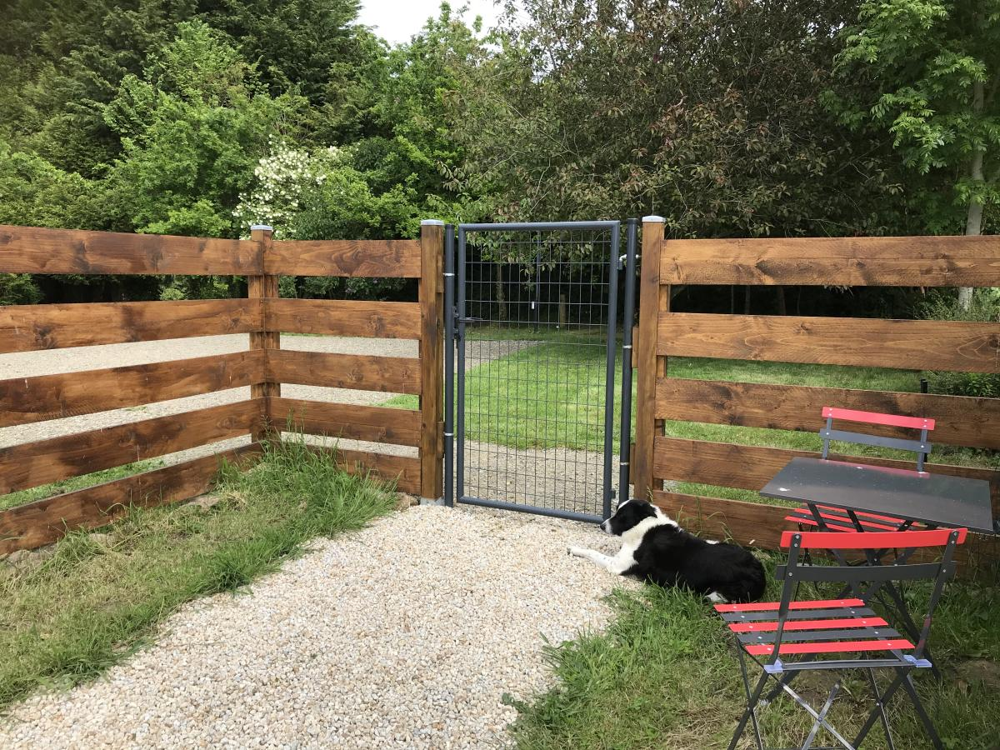
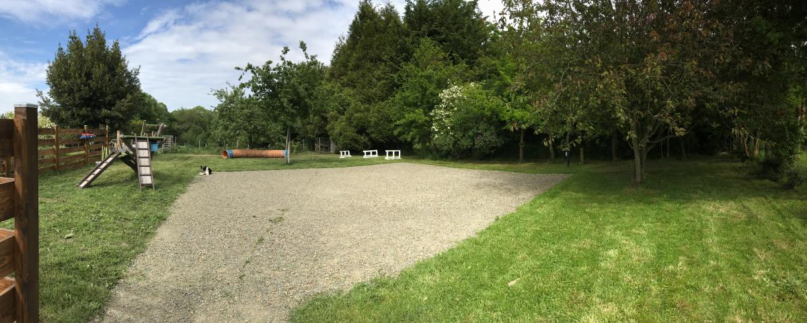
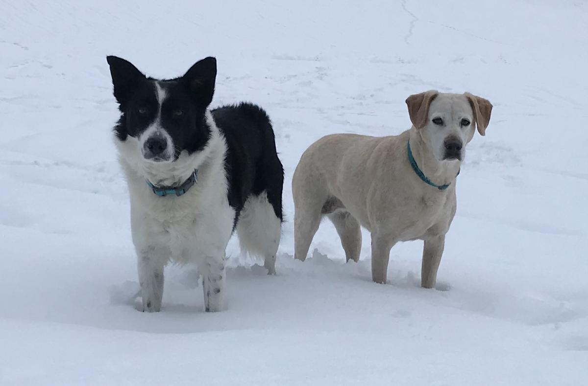
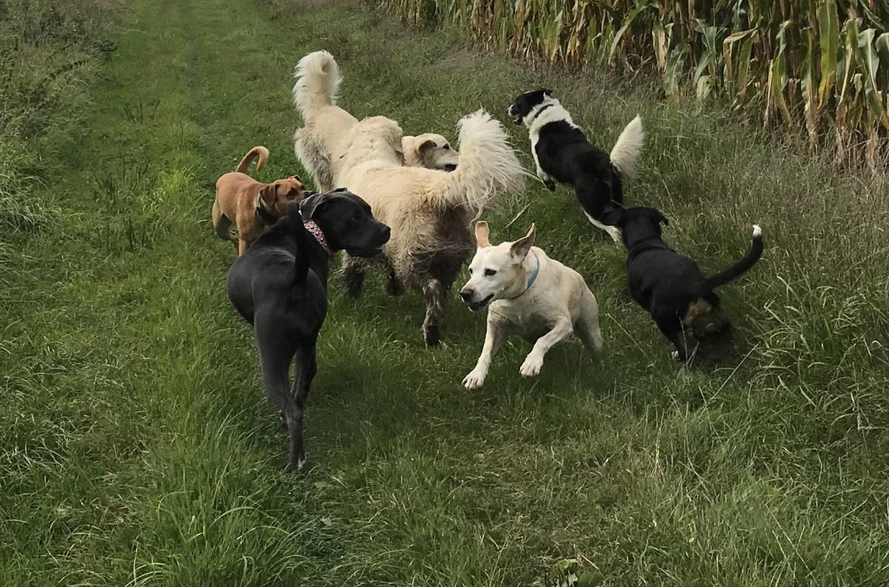
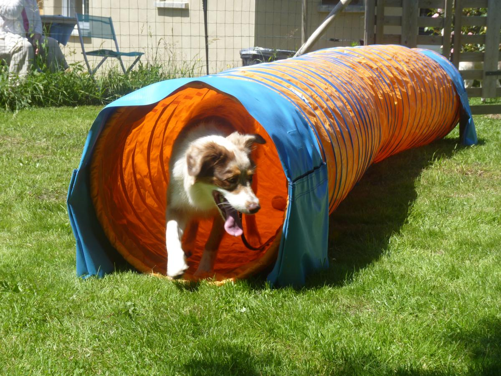
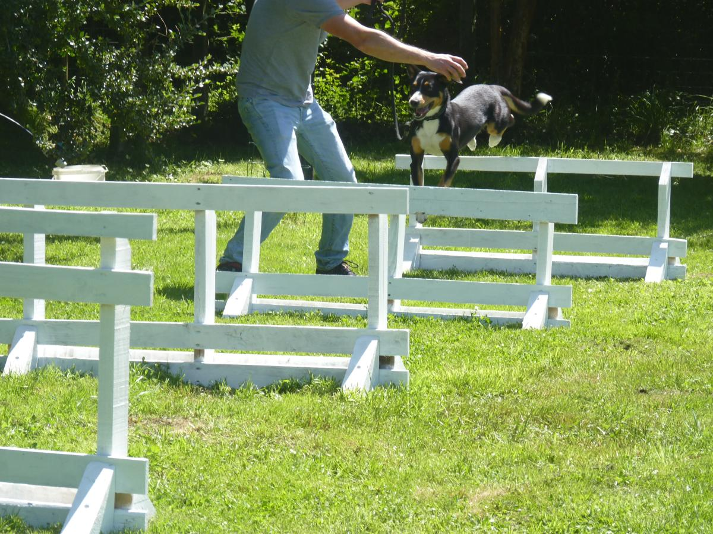
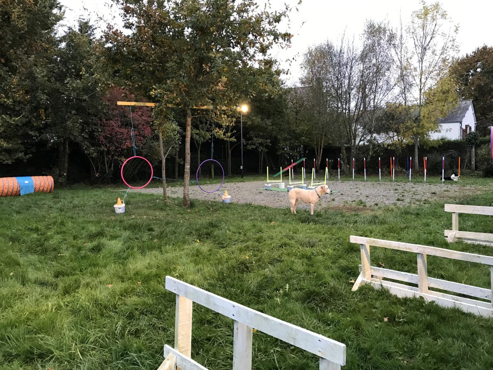

Education canine et dressage
L’éducation canine vous permet de faire en sorte que votre chien s’intègre dans votre cadre de vie. Vous lui apprendrez certaines consignes afin qu’il ne soit pas gênant pour vous et votre entourage.
Le dressage a pour objectif d’utiliser et de développer les capacités de votre animal pour la réalisation d’un travail spécifique ou pour pratiquer une activité de loisir.
Je vous accompagne en tant qu’éducateur canin et comportementaliste pour vous apporter tous les conseils utiles et astuces pour gérer votre chiot dès son arrivée notamment pour l’apprentissage de la propreté, la gestion des mordillements et des agitations. Je vous aide également à démarrer l’éducation de votre chiot en douceur afin d’éviter l’apparition de certains problèmes avec le temps.
Par ailleurs, je vous enseigne les méthodes de dressage et d’éducation canine qui s’adressent à tout type de chiens. Contrairement aux idées reçues, l’âge n’est pas un facteur limitant pour l’apprentissage. C’est la méthode employée qui va donner à votre chien l’envie d’apprendre.
Lisez directement le sujet qui vous intéresse en cliquant sur les raccourcis suivants :
Mes Méthodes
Mes méthodes se basent sur l'éthologie du chien : je respecte son fonctionnement, ses capacités d'apprentissage et de mémorisation et j'utilise en partie son langage. L'éducation que vous apportez à votre chien doit être ludique et bienveillante. Elle permet de renforcer votre lien affectif afin que votre chien ait plaisir à apprendre et à vous obéir. Avec moi, pas besoin de votre sac à friandises, et d'ailleurs je vous le déconseille car apprentissage n'est pas égal à chantage.
J'ai accompagné plusieurs centaines de couples chien/maître depuis mon installation et je peux vous assurer que n'importe qu'elle race ou type de chien y est réceptif en très peu de temps et peu importe son âge. Ces méthodes sont peu communes, elles fonctionnent également avec les chiens sourds ou ceux ayant subi des traumatismes.
Les cours sont destinés au chien et... au maître ! Un chien va très vite répondre et aura plaisir à obéir si on utilise le bon langage ! Mon objectif est de vous enseigner ce langage en vous transmettant une méthode durable qui vous mènera vers une relation harmonieuse et complice avec votre compagnon à quatre pattes.
Présentation de la structure et prestations
 
Dans un espace sécurisé, les cours d’éducation canine se déroulent sur un terrain de 450m² situé dans la campagne Pleurtuisienne. Afin de garder vos chaussures au sec, ce terrain comprend un espace empierré de 100m².
Je vous propose des cours particuliers, semi-particuliers (maximum 2 personnes) et des cours collectifs (maximum 6 personnes). Les séances individuelles ou à deux personnes peuvent se dérouler soit sur terrain, soit en pleine nature afin de reproduire les circonstances d'une balade. J'organise également des randonnées canines réservées aux personnes qui ont déjà bénéficié de mes services.
Déroulement des séances
 Les séances comprennent un temps de socialisation et de détente ainsi qu'un temps de travail. Mes chiens sont présents sur les cours, ils ont le rôle d’éduquer ou d’apaiser le votre. Je vous présente mes deux coéquipiers, Frisbee et Zilia qui assurent les cours avec moi.
 Durant les séances je vous propose de travailler le rappel en présence des autres chiens, la marche au pied avec ou sans laisse, l'immobilité à proximité et à distance, le refus d'appât, les postures assises et couchées, etc. Je vous enseigne tout ce qui peut vous être utile lorsque vous sortez en promenade avec votre chien.
Vous apprendrez à faire en sorte que votre chien vous obéisse dans toutes les circonstances notamment si vous le lâchez en liberté ou lors de vos promenades en laisse. Vous saurez faire en sorte que votre chien reste à sa place lorsqu'il croise d'autres congénères, qu'il ne tire pas sur sa laisse et qu'il reste immobile lorsque la situation l'impose.
Les cours d’agility
 Les méthodes appliquées en éducation canine sont valables aussi pour les cours d'agility. Si on tient compte des caractéristiques spécifiques à chaque race et si on s'adapte à chaque animal, l'agility est accessible à tout type de chien. Bien entendu, la morphologie de certaines races peut limiter l'accès à certains modules mais dans ce cas, j’adapte le parcours.
 Les cours d’agility sont accessibles dès lors que votre chien répond au rappel et lorsque vous maîtrisez un minimum la marche en laisse. Comptez environ 3 séances en cours individuel pour parvenir à ce niveau.
 Vous apprendrez à votre chien à identifier les différents modules du parcours : saut d’obstacle, cerceaux, passage dans le tunnel, slalom, passerelle et balançoire, etc. Avec une pratique régulière, votre chien développera sa masse musculaire et deviendra de plus en plus agile. Ce loisir renforce la confiance et la complicité entre un maître et son chien. C’est aussi très efficace pour stimuler l’attention et l’obéissance.
Si vous souhaitez des renseignements supplémentaires vous pouvez me joindre directement au 06 58 49 34 12 (contact: Elise SOLA)